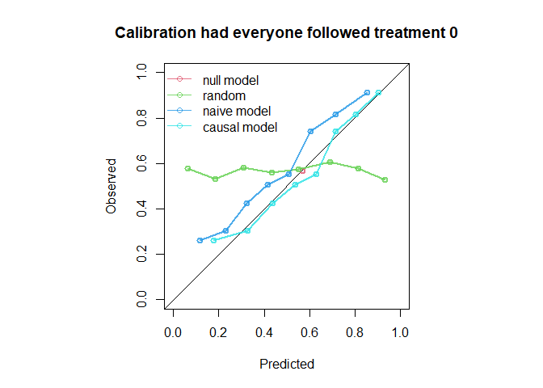
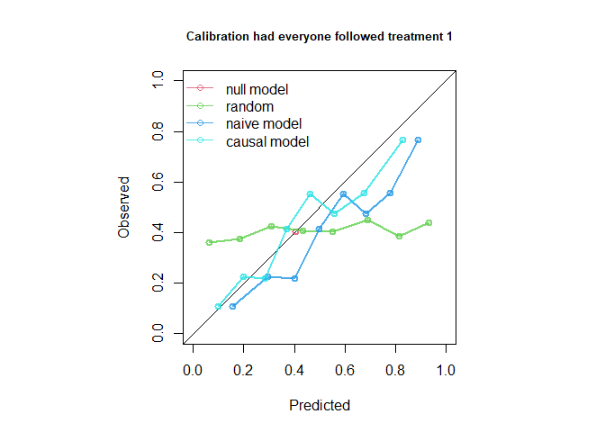

Provides methods to evaluate predictive performance of models that estimate risks under hypothetical intervention scenarios (interventional/causal/counterfactual predictions) with observational data subject to treatment-outcome confounding. Inverse probability of treatment weighting (IPTW) is used to construct a pseudopopulation in which all individuals receive a specified intervention, enabling assessment of agreement between predicted risks under the intervention and observed outcomes in the pseudo-population corresponding to that intervention. Supports interventions with binary or categorical treatment levels, applied either at a single time point or as longitudinal treatment strategies with sequential treatment decisions. Performance measures supported are AUC (Area Under the receiving operating characteristic Curve), Brier score, observed-expected ratio, and calibration plots. Methods implemented in this package are based on work by Keogh and Van Geloven (2024).
Installation
ipeval can be installed from CRAN with:
install.packages("ipeval")The development version of ipeval can be installed from GitHub with:
# install.packages("devtools")
devtools::install_github("survival-lumc/ipeval")Usage
Inputs required to the functions in this package include: (1) a validation data set in which the performance of an interventional prediction model is to be evaluated, and (2) models from which predictions can be made under a specified binary intervention for individuals in the validation data.
To develop the interventional prediction model, we first simulate development data for binary outcome and point treatment , with the relation between and confounded by variable . Variable is a prognostic variable for only the outcome. The treatment reduces the risk of a bad outcome () in this example.

simulate_data <- function(n, seed) {
data <- data.frame(id = 1:n)
data$L <- rnorm(n)
data$A <- rbinom(n, 1, plogis(2*data$L))
data$P <- rnorm(n)
data$Y <- rbinom(n, 1, plogis(0.5 + data$L + 1.25 * data$P - 0.9*data$A))
data
}
df_dev <- simulate_data(n = 2000, seed = 1)Suppose that the aim is to develop a model for informing whether patients should receive treatment or not, by providing estimates of what their risk would be if they were treated and what it would be if they were untreated. We create two prediction models using the development data, from which such predictions could be obtained. The ‘naive model’ and the ‘causal model’ both include A and P as predictors for Y. However, the ‘naive model’ ignores the confounding by L, and the ‘causal model’ controls for the confounding by L through inverse probability weights. A third ‘model’ just generates predictions randomly.
# naive model, not accounting for confounding variable L
naive_model <- glm(Y ~ A + P, family = "binomial", data = df_dev)
# causal model, accounting for L by IP-weighting
trt_model <- glm(A ~ L, family = "binomial", data = df_dev)
propensity_score <- predict(trt_model, type = "response")
df_dev$iptw <- 1 / ifelse(df_dev$A == 1, propensity_score, 1 - propensity_score)
causal_model <- glm(Y ~ A + P, family = "binomial", data = df_dev, weights = iptw)
# a model that randomly predicts something, not very good probably
random_predictions <- runif(5000, 0, 1)
print(coefficients(naive_model))
#> (Intercept) A P
#> -0.1088558 0.3407801 1.1878727
print(coefficients(causal_model))
#> (Intercept) A P
#> 0.3862409 -0.6863653 1.1949409The naive and causal models can generate predictions under treatment (setting to 1) and predictions under no treatment ( to 0), given values of the predictors . The estimated coefficient for of the naive model is positive due to confounding. As a consequence, the risk under treatment is estimated to be higher than under no treatment, so when this model is used for decision making, no patient should be treated. The causal model, however, correctly infers that treatment benefits patients (as the coefficient for is negative).
We are now interested in how the models perform in an external validation dataset. In this example, the data is simulated in the same way as the development data. In practice, the causal structure in the validation data can be different from the original development data.
df_val <- simulate_data(n = 5000, seed = 2)For a well performing model, the predictions under treatment should be accurate compared to the outcomes patients would have if they were to be treated. Similarly, the predictions under no treatment should be accurate compared to the outcomes they would have if left untreated. Therefore, the question that we would like to answer is the following:
How well does our prediction model perform if we were to treat nobody? And if we were to treat everybody?
The ipeval package aims to provide tools to answer questions like these. The main function ip_score() can be used for this. This function estimates several predictive performance measures in a setting in which all patients were to be given the treatment of interest. The assumptions required for valid inference are printed by default. The first argument of ip_score() is the object to validate. This can be a glm model, a coxph model for survival data, or a numeric vector corresponding to predicted risks under the treatment level of interest for each individual in the validation data. Multiple models can be specified for comparison. Other arguments supplied are the validation data, the observed outcome, a treatment formula for which the left hand side denotes the treatment variable and the right hand side the confounders required to adjust for treatment assignment, and the hypothetical treatment option for which you want to know how well the model performs if everyone in the population was assigned to that treatment.
If nobody would have been treated:
ip_score(
object = list(
"random" = random_predictions,
"naive model" = naive_model,
"causal model" = causal_model
),
data = df_val,
outcome = Y,
treatment_formula = A ~ L,
treatment_of_interest = 0
)
#> Estimation of the performance of the prediction model in a
#> pseudopopulation where everyone's treatment A was set to 0.
#> The pseudopopulation is constructed from 2561 (51.2%) subjects
#> ($pseudopop) in data who indeed received treatment level 0. These
#> subjects are reweighted to represent the full target population under a
#> hypothetical intervention in which everyone received this treatment
#> level.
#> The following assumptions must be satisfied for correct inference:
#>
#> Causal assumptions:
#>
#> - Conditional exchangeability: after adjustment for the covariates used
#> to construct the inverse probability of treatment weights (IPTW), i.e.,
#> {L}, there is no unmeasured confounding for the relation between
#> treatment and outcome.
#> - Conditional positivity: the probability of receiving treatment level
#> 0 should be greater than zero for each value (combination) of the
#> variable(s) {L} that is observed in the full population. The
#> distribution of IPT-weights can be assessed with
#> $ipt$weights[$pseudopop$ids].
#> - Consistency: the observed outcome under the received treatment level
#> equals the potential outcome under that treatment level. This includes
#> the assumption of no interference between subjects.
#>
#> Modeling assumptions:
#>
#> - Correctly specified propensity model. Estimated treatment model is
#> logit(A) = -0.07 + 2.05*L. See also $ipt$model.
#>
#> Performance estimates:
#>
#> model auc brier scaled_brier oeratio
#> null model 0.500 0.245 0.0 1.00
#> random 0.496 0.335 -36.3 1.14
#> naive model 0.766 0.204 17.1 1.20
#> causal model 0.766 0.196 20.3 1.00
And similarly, we can assess performance if everybody had been treated:
ip_score(
object = list(
"random" = random_predictions,
"naive model" = naive_model,
"causal model" = causal_model
),
data = df_val,
outcome = Y,
treatment_formula = A ~ L,
treatment_of_interest = 1,
quiet = TRUE
)
#>
#> model auc brier scaled_brier oeratio
#> null model 0.500 0.241 0.00 1.000
#> random 0.533 0.314 -30.32 0.812
#> naive model 0.739 0.218 9.44 0.751
#> causal model 0.739 0.202 16.05 0.930
The causal model has better calibration and Brier score compared to the naive model under both treatment settings. Note that the AUC of the naive model and the causal model are equal. AUC is driven entirely by how individuals’ model predictions are ranked, not by the magnitude of the predictions. In this simple setting, P is the only variable driving prognostic differences between individuals (in a pseudopopulation where we counterfactually set everyone’s treatment status to ). While the models have different coefficients for P, individuals are ranked in exactly the same way.
The function ip_score() also supports bootstrapping for confidence intervals around performance measures. Right censored survival data and cox models are also supported.
Traditional validation
In traditional validation studies, it is common to leave the data as it is, and compute the performance metrics on this observed dataset, where some patients were treated and others were not, and treatment assignment is dependent on confounders. For didactic purposes, this package has a convenience function that can do this. Note that we do not specify the treatment level under which predictions are to be made and compared against corresponding outcomes. The resulting performance measures represent performance of the models in a population where some patients were treated and others were not, according to some treatment assignment mechanism present in the validation data.
observed_score(
object = list(
"random" = random_predictions,
"naive model" = naive_model,
"causal model" = causal_model
),
data = df_val,
outcome = Y,
metrics = c("auc", "brier", "oeratio")
)
#>
#> model auc brier oeratio
#> null model 0.500 0.250 1.000
#> random 0.505 0.331 1.010
#> naive model 0.764 0.198 0.998
#> causal model 0.741 0.207 1.001Note that the naive model now appears to outperform the causal model. These performance measures represent the performance of the models under the treatment assignment strategy present in the validation data. These performance estimates are a mixture of performance of the estimated risk under treatment of patients that were treated, and the estimated risk under no treatment of patients that were not treated. It does not assess the performance of risks under treatment of patients that were not treated and vice versa. If these models were to be used for decision-making, the treatment assignment mechanism would change, and these performance estimates would no longer be relevant. For this reason, the predictive performance under interventions should be estimated, using ip_score().
Further reading
A more detailed motivation is given in this vignette. How to use this package for survival data is given in time-to-event vignette. In this vignette, we demonstrate usage for longitudinal treatments with time dependent confounding.